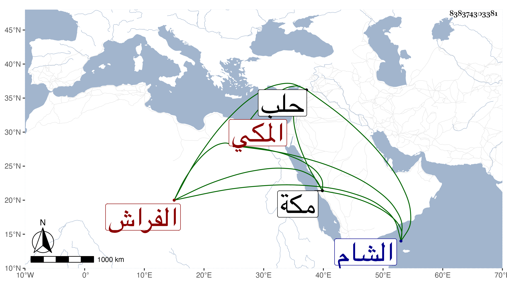

0902Sakhawi.DawLamic.ITO20230111-ara1.EIS1600.838374303381
Biography ID: 838374303381
847
علي بن عبد الله بن محمد نور الدين الرزبي بضم المهملة وسكون الزاي ثم موحدة المكي الفراش بالمسجد الحرام . أجاز له في سنة خمس وتسعين فما بعدها ابن صديق وابن قوام وابن منيع وابنتا ابن عبد الهادي وابنة ابن المنجا وابن فرحون وآخرون أجاز لي وناب في الفراشة بالمسجد الحرام ودخل بلاد الشام وحلب في سنة سبع وثلاثين . وذكر ما يدل على أنه ولد في سنة تسع وسبعين وسبعمائة أو التي تليها . ومات في رجب سنة ثمان وخمسين بمكة ودفن بمعلاتها رحمه الله . أرخه ابن فهد .
